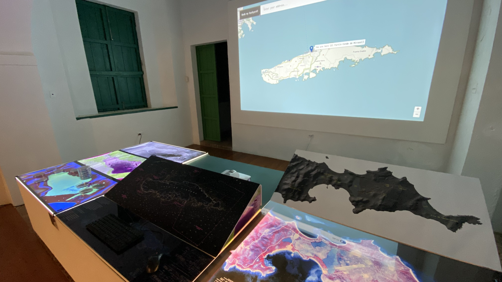
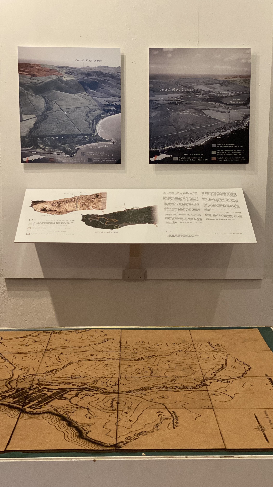
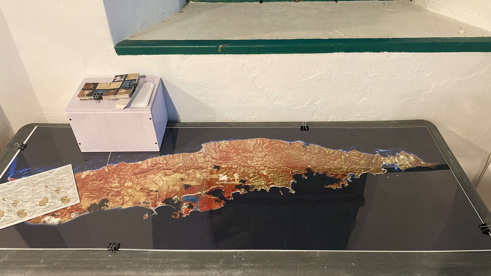
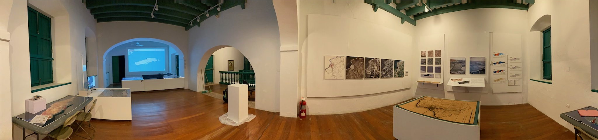

1 / 5

Section exploring displacement, land reclamations, and gentrification.
2 / 5

Section exploring the impact of the Navy's training on the island.
3 / 5

Piece showing the changes in boundaries in Vieques
from a bird's-eye view.
from a bird's-eye view.
4 / 5

Craft station for visitors to engage with exhibit pieces.
5 / 5

Panorama of full exhibit.